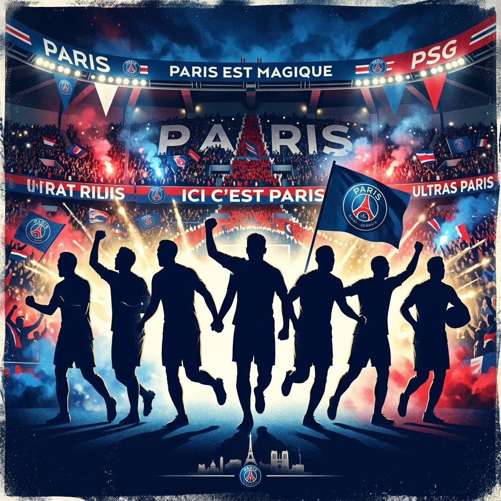

A Ligue 1 é a principal competição de futebol da França. Ao longo de sua história, diversos clubes tradicionais disputaram o campeonato, contribuindo para o desenvolvimento do futebol francês.
Entre os principais clubes da competição está o Paris Saint-Germain, fundado em 1970. O clube tem sua sede em Paris e manda seus jogos no Parc des Princes, estádio que se tornou um dos símbolos do futebol da capital francesa.
O PSG conquistou diversos títulos nacionais ao longo de sua história e também passou a receber grandes jogadores de diferentes países. Sua presença constante nas competições europeias aumentou ainda mais sua importância no cenário internacional.
As cores tradicionais do clube são o azul, vermelho e branco, presentes em seus uniformes e em sua identidade visual. O Paris Saint-Germain representa uma das principais forças do futebol francês e possui uma grande torcida dentro e fora da França.
A Ligue 1 continua sendo uma competição importante para o futebol europeu, reunindo clubes históricos e revelando jogadores que posteriormente ganham destaque em grandes equipes do continente.